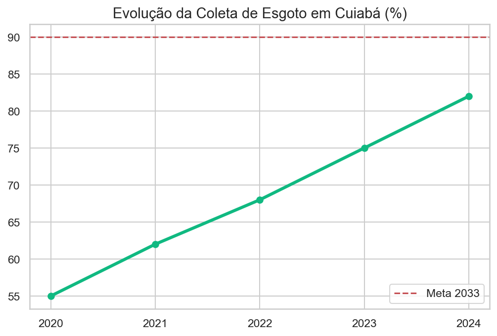
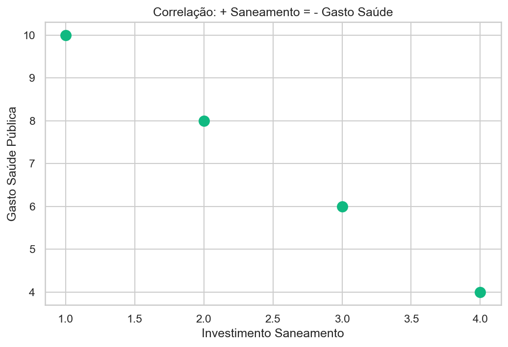
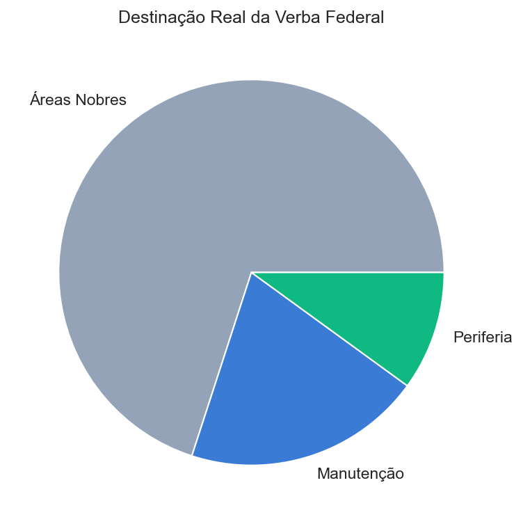

Universalização, dignidade e justiça ambiental em Cuiabá.
Membros: Celia, Izabela, Emanoeli, Robson

Análise da eficiência do investimento privado via concessionária vs. retorno em saúde pública.

Aprovação do Orçamento Anual focado em metas de saneamento e a importância da transparência ativa nas obras.

O modelo de Parceria Público-Privada (PPP) como motor da expansão, monitorado via Lei de Acesso à Informação.